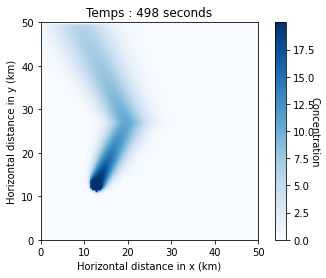

Exercices 9#
Exercice : Contamination dans un lac#
Nous allons étendre l’exercice de contamination d’une rivière de 1D à 2D. On suppose la fuite continue (constante dans le temps) d’un contaminant dans un lac qui est animé d’un courant en \(x\) et \(y\) (Figure ci-dessous). La source de contamination est un périmètre circulaire centré en \(x_{src} = L_x/4\) et \(y_{src} = L_y/4\) de rayon \(r_C = 1.5\) m. Pour cela, vous pouvez utiliser la fonction np.meshgrid.
Le polluant se décompose avec une constante de décroissance de \(\gamma = 0.001 \, \text{s}^{-1}\). Les équations à résoudre sont presque les mêmes que pour l’exercice précédent, à l’exception du terme du taux de dégradation (ou de réaction) :
où \(C\) est la concentration du contaminant, \(D\) est la diffusivité, et \(V_x\) et \(V_y\) sont les vitesses horizontales de l’eau. Nous supposons que la concentration sur les bords du domaine est nulle en tout temps.

Figure: Let but de l’exercise est de modéliser l’évolution d’un contaminant dans un lac (ici Q=2).
Nous voulons écrire un code avec deux variantes. Définissez un paramètre Q, qui vaut 1 ou 2, et utilisez des clauses conditionnelles pour écrire un unique code générique qui fonctionne pour les deux variantes.
Q1: Réalisez une première simulation avec une vitesse uniforme sur tout le domaine.
Q2: Ensuite, changez le signe de la vitesse
V_xdans la partie supérieure du modèle (\(y > L_y/2\)).
Paramètres: |
Valeurs: |
|---|---|
Concentration du polluant “Cmax” |
20 |
Longueur \(x\) du modèle \(L_x\) |
50 m |
Longueur \(y\) du modèle \(L_y\) |
50 m |
Centre de la fuite \(x\) |
\(L_x/4\) m |
Centre de la fuite \(y\) |
\(L_y/4\) m |
Rayon de la fuite \(r_C\) |
1.5 m |
Nombre de cellules “nx” |
110 |
Nombre de cellules “ny” |
120 |
Temps total |
500 s |
Diffusivité du polluant |
0.02 m²/s |
Constante de décroissance \(\gamma\) |
0.001 |
Q=1 |
|
Vitesse x du lac \(V_x\) |
0.1 m/s |
Vitesse y du lac \(V_y\) |
0.2 m/s |
Q=2 |
|
\(V_x\) dans la moitié inférieure |
0.1 m/s |
\(V_x\) dans la moitié supérieure |
-0.1 m/s |
Vitesse y du lac \(V_y\) |
0.2 m/s |
Table 1: Paramètres pour le problème du lac.
✅ À vous de faire !#
import numpy as np
import matplotlib.pyplot as plt
from IPython.display import display, clear_output
Q=2
# Physical parameters
D = 0.02 # diffusivity, m^2/s
Lx = 50.0 # x-distance, m
Ly = 50.0 # y-distance, m
Vx0 = 0.1 # speed along x m/s
Vy0 = 0.2 # speed along y m/s
Cmax = 20.0 # concentration at leak
gamma = 1e-3 # rate of decay /s
ttot = 500.0 # total time, s
xsrc = Lx / 4 # x-coordinates of source
ysrc = Ly / 4 # y-coordinates of source
r_c = 1.5
time = 0.0
# Numerical parameters
ny = 110 # number of cells along y
nx = 120 # number of cells along x
dx = Lx / (nx - 1) # cell size along x
dy = Ly / (ny - 1) # cell size along y
x = np.linspace(0, Lx, nx) # x-coordinates
y = np.linspace(0, Ly, ny) # y-coordinates
X, Y = np.meshgrid(x, y) # 2D coord arrays
nout = 250 # plot every nplot
# Initialization
C = np.zeros((ny, nx)) # array for concentration
Vx = Vx0 * np.ones((ny, nx - 1)) # array for velocity along x
Vy = Vy0 * np.ones((ny -1, nx )) # array for velocity along y
if Q==2:
Vx[int(ny / 2):,:] = -Vx0
# Initial C - Gaussian
rad = np.sqrt((X - xsrc) ** 2 + (Y - ysrc) ** 2)
dt = min(min(dx, dy)**2/(4.1*D), 0.1*min(dx/np.max(np.abs(Vx)), dy/np.max(np.abs(Vy)))) # time step
nt = int(ttot / dt) # number of time steps
fig, ax = plt.subplots()
s = ax.imshow(C, extent=[0, Ly, 0, Lx], origin='lower', cmap='Blues')
cbar = plt.colorbar(s)
cbar.set_label("Concentration", rotation=270)
# Time loop
for it in range(nt):
time += dt
# Constant source over time
C[rad < r_c] = Cmax
# DIFFUSION
qy = -D * (C[1:, 1:-1] - C[:-1, 1:-1]) / dy # diffusion in y
qx = -D * (C[1:-1, 1:] - C[1:-1, :-1]) / dx # diffusion in x
dCdtd = - ( (qx[:,1:] - qx[:,:-1]) / dx + (qy[1:,:] - qy[:-1,:]) / dy )
C[1:-1, 1:-1] += dt * dCdtd # mise a jour de la diffusion
# ADVECTION
dCdta = np.zeros((ny, nx)) # array for change in C
dCdta[:,1:] -= (Vx > 0) * Vx * (C[:,1:] - C[:,:-1]) / dx # positive Vx
dCdta[:,:-1] -= (Vx < 0) * Vx * (C[:,1:] - C[:,:-1]) / dx # negative Vx
dCdta[1:,:] -= (Vy > 0) * Vy * (C[1:,:] - C[:-1,:]) / dy # positive Vy
dCdta[:-1,:] -= (Vy < 0) * Vy * (C[1:,:] - C[:-1,:]) / dy # negative Vy
C += dt * dCdta # mise a jour de la advection
# REACTION
dCdtr = - C * gamma
C += dt * dCdtr # mise a jour de la reaction
# Boundary conditions
C[0, :] = 0
C[-1, :] = 0
C[:, 0] = 0
C[:, -1] = 0
# Plot concentration field
if it % nout == 0:
clear_output(wait=True) # Clear the output in VS Code
ax.cla()
ax.imshow(C, extent=[0, Ly, 0, Lx], origin='lower', cmap='Blues')
ax.set_xlabel('Horizontal distance in x (km)')
ax.set_ylabel('Horizontal distance in y (km)')
ax.set_title(f'Temps : '+ str(int(time)) + ' seconds')
display(fig)